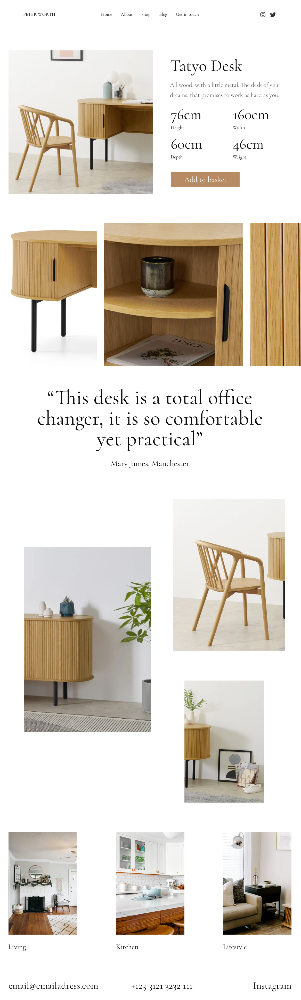

<section>
    <div class="wrapper">
        <div class="grid-full">


<div class="marginbottom--xxxl"></div>
<h1 class="ralph">Peter Worth Furniture</h1>

<div class="marginbottom--m"></div>


    

<div class="marginbottom--l"></div>
<div class="col grid-ninety">
    <h3 class="emma">The Problem</h3>
    <p>I was approached by Peter from a friend's recommendation and asked if I could help design and deliver a website that would match their brand and assist in online presence.<br>There was also a need for the website to be a CMS, so we decided upon using WordPress.</p>
</div>

<div class="col grid-ninety">
    <h3 class="emma">The Solution</h3>
    <p>A simple, clean approach for the visuals of the website to match the products. Working alongside the photographer and Peter, the end solution was loved.</p> 
</div>

<div class="col grid-ninety">
    <h3 class="emma">My Responsibilites</h3>
    <p>Initial capture of the website requirements, website strategy, prototype, design, regular feedback sessions with client, work closely with photography, design iterations, development of the WordPress build.</p>
    
    <div class="marginbottom--m"></div>
    
    <div class="marginbottom--m"></div>    


    <div class="marginbottom--m"></div>
    
</div>
<div class="marginbottom--xl"></div>

<div class="grid-full col">
  <div class="CrossPageNavigation">
    <div class="grid-full">
      <div class="CrossPageNavigationPrevious">
        <strong>Go to the next case study</strong><br />
          <a href="benefitfraud.html">GOV.UK - Report Benefit Fraud</a>
      </div>
    </div>
  </div>
</div>


</div>
</div>
</section>